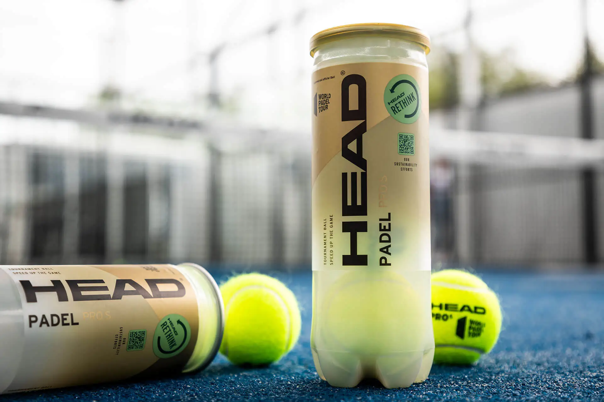
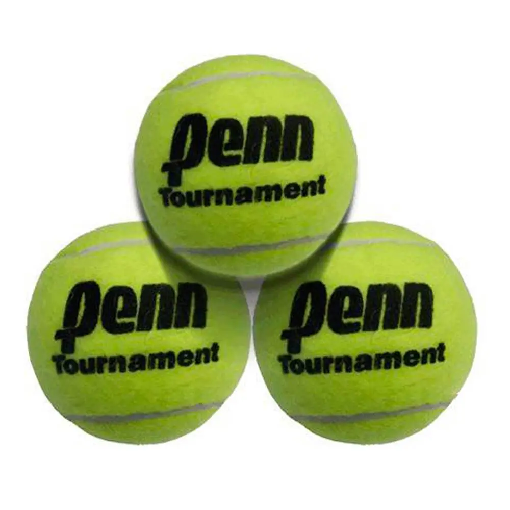
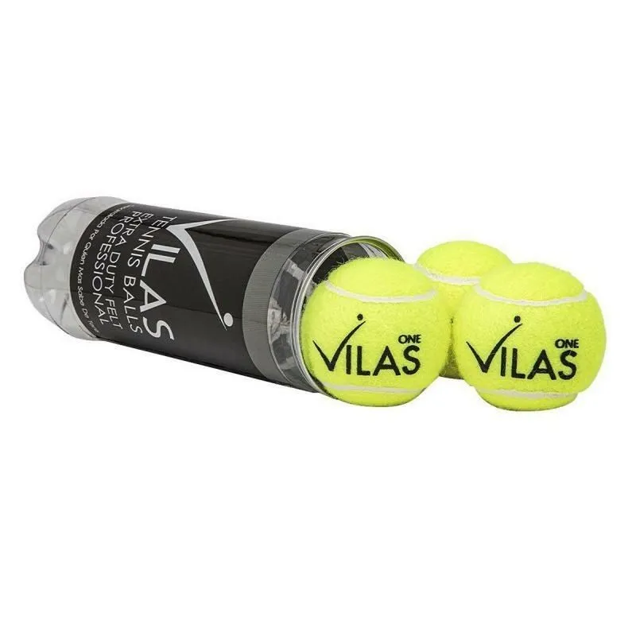
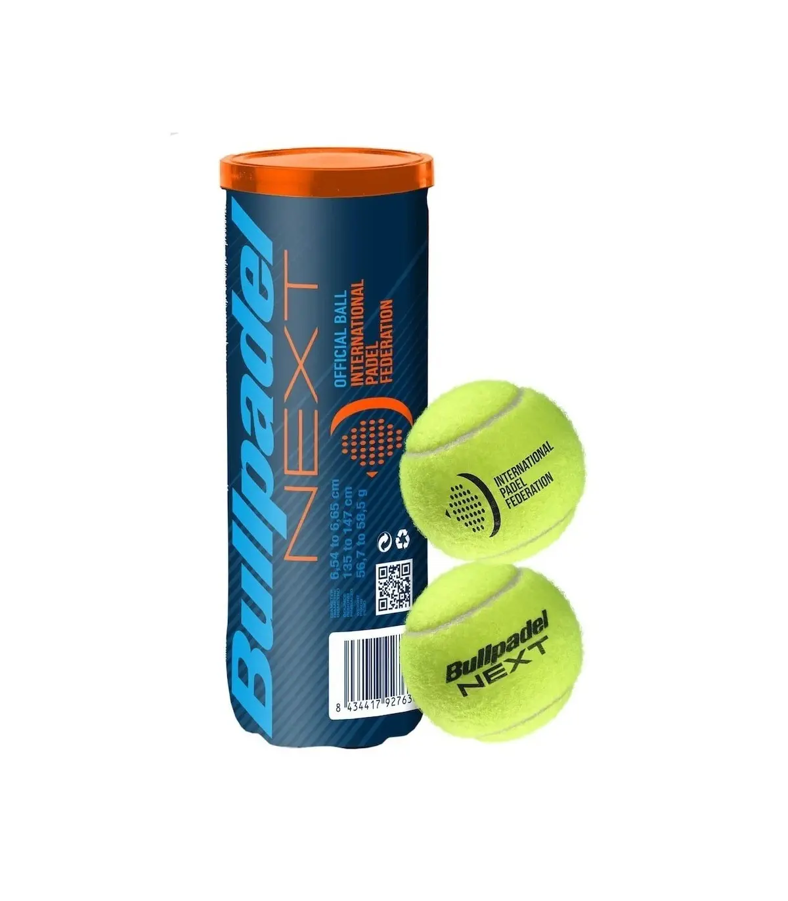
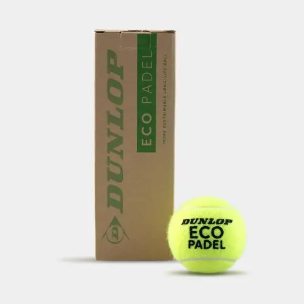

Pelotas de competición
Estas pelotas están diseñadas para ser utilizadas en torneos y competiciones
oficiales. Tienen un rebote consistente y están fabricadas con materiales de
alta calidad para garantizar su durabilidad y rendimiento durante partidos
largos.

Pelotas de entrenamiento
Son similares a las pelotas de competición, pero a menudo son un poco más
económicas y pueden tener una durabilidad ligeramente menor. Son ideales para
prácticas y entrenamientos, donde se pueden gastar varias pelotas en una sola
sesión.

Pelotas de iniciación o principiantes
Estas pelotas suelen ser más suaves y tienen un rebote más bajo, lo que las hace
ideales para jugadores principiantes que están aprendiendo los fundamentos del
juego. Ayudan a desarrollar habilidades básicas como el control y la técnica de
golpeo.

Pelotas de alta altitud
Diseñadas para jugar en áreas con altitudes elevadas, donde la presión
atmosférica es menor. Tienen un rebote ligeramente más alto para compensar la
menor resistencia del aire.

Pelotas de baja altitud
Lo opuesto a las pelotas de alta altitud, estas están diseñadas para áreas con
altitudes más bajas donde la presión atmosférica es mayor. Tienen un rebote
ligeramente más bajo para adaptarse a estas condiciones
